第 12 章 陶瓷的結構與性質
本章預覽
核心問題
陶瓷的晶體結構比金屬複雜得多——為什麼？因為陶瓷由兩種以上不同大小的離子組成，結構必須同時滿足電中性、離子尺寸匹配、和配位數幾何。理解陶瓷結構的關鍵是把陰離子（通常較大）當作骨架，陽離子填入其間隙——這與金屬的「等徑硬球堆積」思維完全不同。從簡單的 NaCl（食鹽）到複雜的 BaTiO₃（鈣鈦礦——手機裡每顆 MLCC 電容的核心），陶瓷結構的多樣性來自離子半徑比和電荷平衡的幾何約束。本章建立從結構→缺陷→力學性質的完整鏈條。
10 條關鍵概念
- 離子鍵＋共價性：陶瓷的混合鍵結決定高熔點、高硬度、脆性和電絕緣性——%IC 公式（Ch2）量化離子性比例
- 配位數由 $r_C/r_A$ 決定：陽離子–陰離子半徑比決定陽離子周圍可容納多少陰離子——幾何約束是理解陶瓷結構的第一原理
- AX 結構三型：岩鹽（NaCl, CN 6:6）、氯化銫（CsCl, CN 8:8）、閃鋅礦（ZnS, CN 4:4）——半徑比落在不同範圍決定結構類型
- AₘXₚ 結構： 螢石（CaF₂——核燃料 UO₂ 的結構）、金紅石（TiO₂）
- AₘBₙXₚ 功能陶瓷：鈣鈦礦（BaTiO₃——鐵電/壓電）和尖晶石（MgAl₂O₄——鐵氧磁體）
- 矽酸鹽的多樣性：SiO₄⁴⁻ 四面體共用 0–4 個頂點→島狀、鏈狀、層狀、3D 網絡——從橄欖石到石英
- 碳的混成魔術：$sp^3$（鑽石）、$sp^2$（ 石墨/ 石墨烯）、$sp^2$ 彎曲（CNT、富勒烯）——同一元素，天壤之別
- Frenkel vs Schottky 缺陷：離子晶體的兩種本徵缺陷——都必須維持電中性。陽離子尺寸和極化性決定哪種主導
- 彎曲試驗取代拉伸：陶瓷拉伸極困難（脆性→對齊敏感）→ 三點/四點彎曲測彎曲強度
- Weibull 統計的必要性：陶瓷強度的巨大變異性來自裂紋尺寸分布——$m$ 值愈大→愈可靠
🧭 本章推理地圖
- 離子／共價鍵具有電荷與方向限制（§12.1）→ 原子排列須滿足電中性、半徑比與配位幾何（§12.1）。
- 這些限制決定 AX、AₘXₚ、AₘBₙXₚ 結構（§12.2）及矽酸鹽四面體連結（§12.3）→ 形成多樣結構與密度（§12.2–§12.4）。
- 異價摻雜或偏離化學計量（§12.5–§12.6）→ 生成空位或改變離子價態以補償電荷（§12.5–§12.6）→ 改變擴散（§12.8）。
- 強方向鍵與滑移時的電荷衝突（§12.1、§12.7）→ 差排難以移動（§12.7）→ 裂紋尖端不易塑性鈍化（§12.9–§12.10）。
- 陶瓷硬而脆且強度受缺陷控制（§12.9）→ 用破裂韌性與統計方法評估可靠度（§12.9–§12.10）。
先備知識橋接
- Ch2：離子鍵、共價鍵、%IC 公式、電負度——陶瓷鍵結的離子性/共價性混合是理解其性質的基礎
- Ch3：FCC/BCC/HCP 晶體結構、四面體和八面體間隙位置——陶瓷結構的「陰離子骨架」幾乎總是 FCC 或 HCP 排列
- Ch3：理論密度計算——陶瓷的密度公式與金屬類似，但需考慮多種離子的原子量
- Ch4：點缺陷（空位、間隙）——本章擴展到需維持電中性的離子晶體缺陷（Frenkel/Schottky）
12.1 陶瓷晶體結構的基本原理
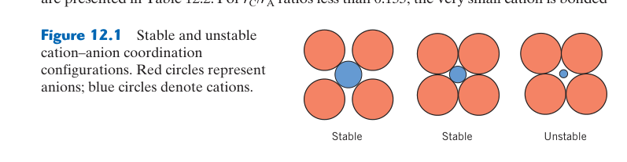
配位穩定性如何由幾何推導
半徑比規則把離子視為不可穿透硬球：陽離子必須大到能同時接觸周圍陰離子，否則陰離子彼此接觸後會把中心離子「擠」離高配位位置。以四配位為例，可由正四面體中心到頂點距離推得臨界 $r_C/r_A\approx0.225$；六配位臨界值約 0.414，八配位約 0.732。數值是幾何邊界，不代表跨過後結構必然瞬間改變。
離子性與共價性的連續性
真實陶瓷很少是純離子鍵。陽離子電荷高、半徑小時會強烈極化陰離子電子雲，使鍵結增加共價性、偏好特定方向與較低配位。壓力也可推動更高配位相穩定。預測結構時應把電中性、半徑、極化和熱力學穩定一起考慮，再以繞射資料驗證。
結構判斷有三個核心限制：電中性決定陽、陰離子比例，離子半徑比影響可容納的配位數，方向性共價鍵則限制鍵角。半徑比規則是硬球近似，能預測趨勢但不能取代實際鍵結、極化能力與溫壓條件。
陶瓷的晶體結構與金屬有本質不同——金屬是單一原子佔據所有晶格點，陶瓷則由兩種或更多離子組成。陰離子（通常較大，如 O²⁻ $r=0.140$ nm, Cl⁻ $r=0.181$ nm）形成骨架（通常是 FCC 或 HCP 排列），而較小的陽離子（如 Na⁺, Ca²⁺, Al³⁺）填入骨架的間隙位置——八面體間隙或四面體間隙。
決定結構的兩個核心因素：(1) 半徑比 $r_C/r_A$——陽離子必須足夠大以接觸周圍的陰離子（否則結構不穩定）。半徑比決定了配位數（CN）：$r_C/r_A > 0.732$ → CN=8（立方體頂點，CsCl 型）；$0.414$–$0.732$ → CN=6（八面體，NaCl 型）；$0.225$–$0.414$ → CN=4（四面體，ZnS 型）。(2) 電中性——整個晶體必須電中性。例如 MgO（Mg²⁺+O²⁻，1:1 比例）形成 NaCl 結構；CaF₂（Ca²⁺+2F⁻，1:2 比例）形成 螢石結構——Ca²⁺ 佔據 FCC 位置，F⁻ 填入所有四面體間隙。
12.2 AX、AX₂ 與更複雜的陶瓷結構
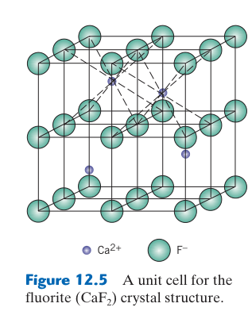
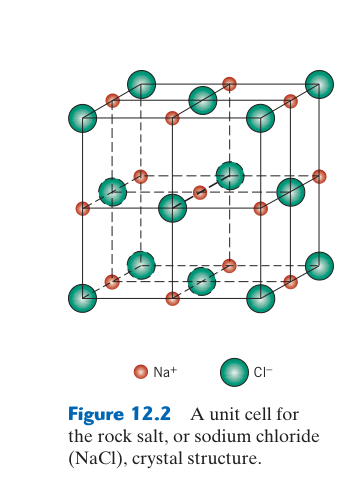
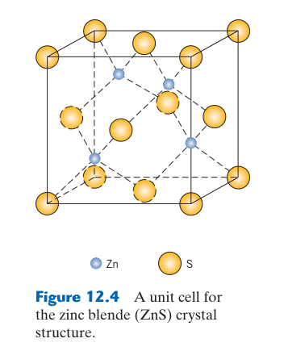
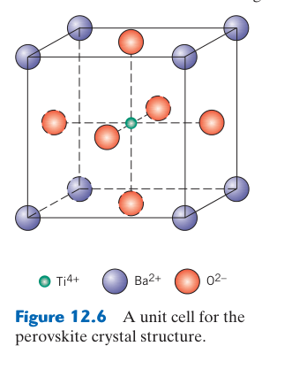
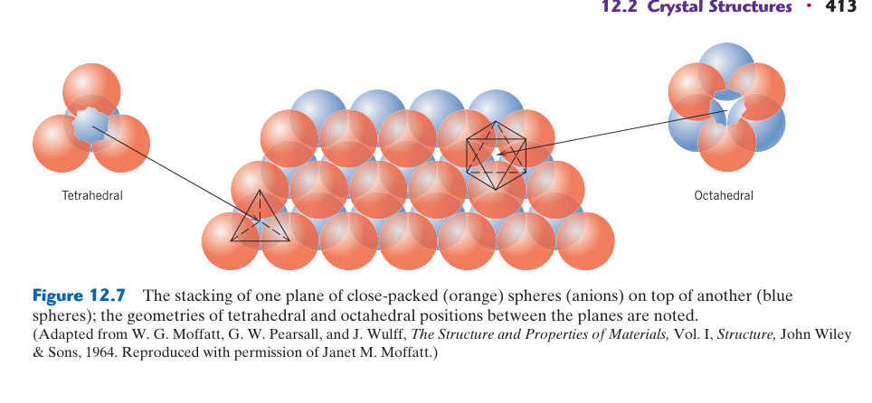
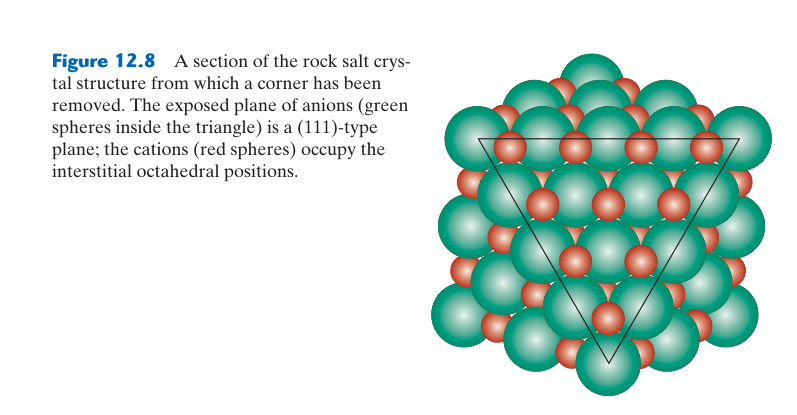
由單位晶胞計算密度
確定結構後，先數出晶胞中各離子的有效數目，再用 $\rho=n'(\sum A_i)/(V_cN_A)$ 求理論密度；其中化學式單位數 $n'$ 必須符合電中性。岩鹽結構每晶胞有四個 AX，CsCl 結構只有一個 AX，若把角落、面心與體心貢獻混淆，密度會錯數倍。實測體密度低於理論值通常反映孔隙，但閉孔、第二相與非化學計量也需排除。
常見原型結構的比較
岩鹽結構兩種離子皆六配位，可視為一個 FCC 子晶格占據另一子晶格全部八面體位置；CsCl 為八配位但不是 BCC 元素晶格，因中心和角落是不同離子；閃鋅礦與纖鋅礦皆四配位，差別在陰離子堆積順序。螢石 CaF₂ 中 Ca²⁺ 八配位、F⁻ 四配位，反螢石則交換陽陰離子角色。
複雜結構與部分占位
尖晶石 AB₂O₄ 可在四面體與八面體位置分配不同價態陽離子，形成正常或反尖晶石；占位分布會改變磁性、導電與催化。鈣鈦礦 ABO₃ 容許 A、B 位多種取代與八面體旋轉，能產生鐵電、壓電、離子導電等功能。此時單一半徑比不足，常用容忍因子與缺陷化學描述結構畸變。
用陰離子堆積與間隙占位讀結構：先辨認陰離子是 FCC、HCP 或其他骨架，再計算陽離子占據四面體或八面體間隙的比例。相同 AX 化學計量仍可能因配位數不同形成岩鹽、CsCl 或閃鋅礦結構，並呈現不同密度與性質。
AX 結構（等量陽離子和陰離子）：(1) 岩鹽結構（rock salt, NaCl）——Cl⁻ 排列為 FCC，Na⁺ 填入所有八面體間隙。CN=6:6。MgO, FeO, NiO, MnO 全部是岩鹽結構。(2) CsCl 結構——Cl⁻ 排列為簡單立方（非 FCC！），Cs⁺ 在立方體中心。CN=8:8。小心：CsCl 不是 BCC 結構——BCC 要求所有位置是同一種原子，CsCl 中頂點（Cl⁻）和中心（Cs⁺）是不同離子。(3) 閃鋅礦結構（zinc blende, ZnS）——S²⁻ 排列為 FCC，Zn²⁺ 填入半數四面體間隙（電荷平衡：每個 S²⁻ 提供 −2，兩個 Zn²⁺ 提供 +4，但只有一半四面體填入 → 結構中每四個四面體間隙有兩個 Zn²⁺）。CN=4:4。
AX₂ 結構—— 螢石（CaF₂）：Ca²⁺ 排列為 FCC，F⁻ 填入所有四面體間隙。CN=8:4（Ca²⁺ 被 8 個 F⁻ 包圍，F⁻ 被 4 個 Ca²⁺ 包圍）。注意：「 螢石」和「反 螢石」——若陽離子和陰離子互換角色（如 Na₂O：O²⁻ 在 FCC，Na⁺ 在全部四面體），稱為反 螢石結構。
ABX₃——鈣鈦礦（perovskite, BaTiO₃）：Ba²⁺ 和 O²⁻ 共同形成 FCC（Ba²⁺ 在頂點，O²⁻ 在面心），Ti⁴⁺ 在體心的八面體間隙。BaTiO₃ 是鐵電材料——Ti⁴⁺ 可以偏離體心（沿 $c$ 軸位移），產生自發極化，用於電容器和壓電元件。AB₂X₄——尖晶石（spinel, MgAl₂O₄）：O²⁻ 排列為 FCC，Mg²⁺ 填入 1/8 四面體間隙，Al³⁺ 填入 1/2 八面體間隙。反尖晶石（如 NiFe₂O₄）——半數 Fe³⁺ 在四面體，Ni²⁺ 和另一半 Fe³⁺ 在八面體。尖晶石鐵氧磁體（ferrite）是重要的磁性陶瓷材料。
12.3 矽酸鹽陶瓷——SiO₄⁴⁻ 四面體的多樣化連結
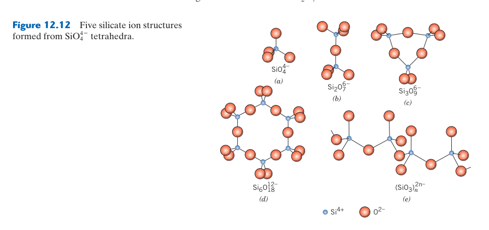
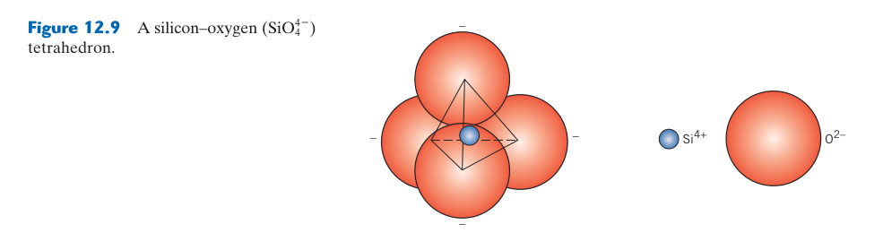
由氧／矽比辨認連結方式
孤立四面體每個 Si 對應四個 O；若共享一個頂角氧，該氧只分攤一半給每個 Si。隨橋接氧增加，O/Si 比由 4 降至單鏈 3、片層 2.5、三維架構 2。剩餘負電荷需由 Mg²⁺、Ca²⁺、Al³⁺、Na⁺ 等補償，因此化學式可反推四面體聚合程度。
結構如何對應性質
層狀矽酸鹽在層內鍵強、層間鍵弱，容易沿層解理並可讓水或離子進入；這造成雲母片狀劈裂與黏土可塑、膨潤。三維 SiO₂ 網絡方向較均勻、黏度與軟化溫度高。Al³⁺ 取代 Si⁴⁺ 後需額外陽離子補償，形成長石、沸石等具離子交換或孔道功能的結構。
玻璃中的網絡連通
非晶矽酸鹽仍保留局部 SiO₄ 四面體，只是長程排列無週期。網絡修飾劑打斷 Si–O–Si 並產生非橋接氧，使熔體黏度下降、加工容易，但通常增加熱膨脹與化學溶出。配方設計需在熔製溫度、耐水性、光學與熱衝擊間取捨。
橋接氧數控制網絡維度：孤立四面體、單鏈、雙鏈、層狀與三維網絡依序共享更多氧，負電荷與所需補償陽離子也隨之改變。網絡連通度提高通常增加黏度、軟化溫度與化學耐久性；Na₂O、CaO 等修飾劑則製造非橋接氧而降低連通。
矽酸鹽是地殼中最豐富的陶瓷材料——從花崗岩到黏土到玻璃，全部基於 SiO₄⁴⁻ 四面體的基本構建單元。Si⁴⁺（$r=0.040$ nm）被四個 O²⁻ 包圍（$r_C/r_A=0.29$，CN=4，四面體）。四面體之間透過共用頂點氧原子連結——從不共用邊或面（Si⁴⁺ 之間的排斥太強）。
四面體的連結程度決定了矽酸鹽的四大類別：(1) 島狀（孤立四面體，SiO₄⁴⁻，如橄欖石 Mg₂SiO₄）——四面體之間無共用氧，Si:O=1:4。高熔點、三維均勻性質。(2) 鏈/環狀——兩個頂點共用（Si:O=1:3）。輝石（pyroxene，單鏈）和角閃石（amphibole，雙鏈）形成纖維狀或柱狀晶體。石綿（asbestos）就是角閃石的纖維狀形態。(3) 層狀——三個頂點共用（Si:O=2:5）。黏土（kaolinite）、雲母（mica）、滑石（talc）沿層間僅靠弱的二次鍵結合 → 極易沿層間剝離。(4) 三維網狀——四個頂點全部共用（Si:O=1:2 → SiO₂）。石英、鱗石英、方石英是三種不同的 SiO₂ 多晶型。長石和沸石含有 Al³⁺ 取代部分 Si⁴⁺（需要額外陽離子如 Na⁺, K⁺, Ca²⁺ 補償電荷）。
12.4 碳——同一元素，天壤之別的性質
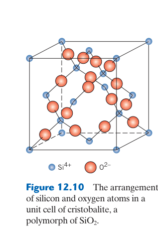
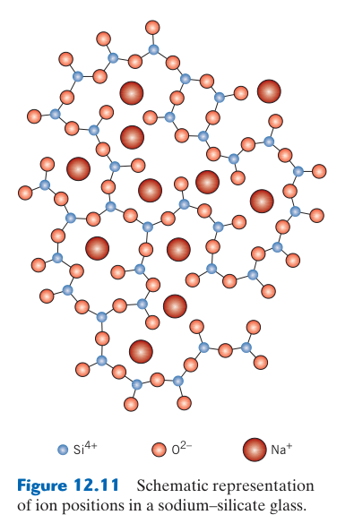
電子結構與各向異性
鑽石每個 C 以四個 $sp^3$ 鍵連成三維網絡，價電子局域化，故硬、導熱高而電絕緣；石墨每個 C 以三個 $sp^2$ 鍵構成蜂巢層，剩餘 $p$ 電子形成離域 $\pi$ 系統，使層內導電。層間只靠較弱作用力，剪切模數與導電、熱傳呈強烈方向性；多晶石墨性質取決於晶粒取向、孔隙與黏結相。
奈米碳從理想到宏觀
石墨烯與碳奈米管的理想拉伸性能來自無缺陷共價網絡，但實際複材需把載荷由基體傳到奈米填料。團聚、短長徑比、界面滑移與製程損傷會大幅降低增強效率；少量填料可先形成導電滲流網絡，導電改善卻不代表力學強化同樣顯著。
高溫環境限制
碳材料在惰性或真空中可耐極高溫並昇華而不熔融，在氧化氣氛中卻會形成 CO/CO₂ 而快速消耗。C/C 煞車與熱防護系統因此依賴抗氧化塗層；塗層熱裂或孔洞會造成局部氧進入，壽命由最弱缺陷控制。
雜化與尺度共同決定性質：鑽石的 $sp^3$ 三維網絡帶來高硬度與絕緣性，石墨的 $sp^2$ 層內強鍵與離域電子帶來方向性導電，層間弱鍵則使其易剪切。石墨烯、奈米管的理想強度極高，但巨觀材料常由缺陷、取向與界面傳力限制。
碳是材料科學中最迷人的元素——同一種原子，不同的鍵結混成 → 從最軟到最硬、從絕緣體到導體。(1) 鑽石（diamond）——$sp^3$ 混成，每個碳與四個鄰居形成共價 σ 鍵（鍵能 711 kJ/mol），三維四面體網絡。極硬（Mohs 10，最硬天然材料）、極高導熱（~2000 W/m·K，比銅高 5 倍——聲子在強共價網絡中高效傳輸）、電絕緣（無自由電子）。
(2) 石墨（graphite）——$sp^2$ 混成，碳原子在六角網狀層內以強共價鍵結合（$a=0.142$ nm），層間僅靠弱凡得瓦力（層距 $c/2=0.335$ nm）。層內未混成的 $p_z$ 軌域形成非定域 π 鍵 → 電子可在層內自由移動 → 層內導電。層間極弱 → 易滑移 → 潤滑劑。(3) 奈米碳材料——富勒烯（C₆₀，足球形分子）、奈米碳管（CNT， 石墨層捲成管，$E$ 可達 ~1000 GPa，強度 ~50 GPa）、 石墨烯（單層 石墨，2010 年 Nobel Prize）。這些材料的機械和電子性質遠超傳統材料——但大規模生產仍在開發中。
12.5 陶瓷中的點缺陷——Frenkel 與 Schottky 缺陷
Kröger–Vink 記號的三個欄位
缺陷符號依序寫出物種、所占位置與相對有效電荷。例如氧空位 $V_O^{\bullet\bullet}$ 表示氧位置空缺，相對正常 O²⁻ 少兩個負電荷；$M_i^\bullet$ 表示正離子在間隙位置。有效電荷是相對完美晶格位置，不等於離子的實際氧化數。先寫質量守恆，再寫電荷守恆，可系統化建立缺陷反應。
環境會改變缺陷族群
可變價氧化物在低氧分壓下可能失氧，產生氧空位並讓部分金屬陽離子還原；高氧分壓則可能形成金屬空位或電洞。這使電導率、顏色、擴散和化學計量隨氣氛改變。感測器與燃料電池正利用此效應，結構陶瓷則需避免缺陷導致高溫蠕變或性能漂移。
缺陷濃度與溫度
本徵 Schottky 或 Frenkel 缺陷遵循由形成自由能決定的 Arrhenius 趨勢；但摻雜量高時，電荷補償缺陷可由化學組成固定，未必隨溫度以同樣方式增加。分析離子導電時要把載子濃度與遷移率分開：更多空位不保證導電更高，若缺陷聚集或被摻雜離子束縛，移動率可能下降。
缺陷必須維持整體電中性：Schottky 缺陷以化學計量比例形成陽、陰離子空位，Frenkel 缺陷則由離子離開正常位置進入間隙。實際濃度受形成能、溫度與氧分壓控制，並直接影響離子導電、擴散、燒結與非化學計量。
陶瓷中的點缺陷比金屬更複雜——必須同時維持電中性。(1) Frenkel 缺陷——陽離子從正常晶格位置跳入間隙位置，留下一個陽離子空位 + 產生一個陽離子間隙（「空位+間隙對」）。發生條件：陽離子小（如 Ag⁺, Zn²⁺）→ 容易擠入間隙。總電荷守恆（空位和間隙帶相反的等效電荷）。(2) Schottky 缺陷——等量的陰離子空位和陽離子空位（按化學計量比例）。例如 NaCl 中：一個 Na⁺ 空位 + 一個 Cl⁻ 空位（1:1），維持電中性和化學計量。MgO 中的 Schottky 缺陷：一個 Mg²⁺ 空位 + 一個 O²⁻ 空位。
非化學計量（nonstoichiometry）：某些陶瓷的組成偏離整數比——例如 Fe₁₋ₓO（方鐵礦，wüstite）總是缺鐵（$x \approx 0.05$–0.15）。電荷補償透過 Fe²⁺ 氧化為 Fe³⁺ → 產生電子電洞 → 半導體性。ZrO₂ 添加 Y₂O₃（釔安定氧化鋯 YSZ）→ Y³⁺ 取代 Zr⁴⁺ → 產生 O²⁻ 空位作為電荷補償 → O²⁻ 可透過空位傳導 → 固態氧化物燃料電池（SOFC）的電解質。
12.6 陶瓷中的雜質與固溶體
異價取代會誘發補償缺陷：低價離子取代高價位置時，可藉氧空位、陽離子間隙或其他價態變化維持電中性。選擇哪種機制取決於缺陷形成能與環境氧勢；這也是穩定氧化鋯、半導體氧化物與受主／施主摻雜的核心。
陶瓷中的雜質（dopant）比金屬更複雜——取代必須電荷補償。等價取代（如 MgO 中 Mg²⁺ 被 Ni²⁺ 取代，Ni²⁺+O²⁻ 電荷與 Mg²⁺+O²⁻ 相同）最簡單。不等價取代需要補償機制：若高價陽離子取代低價陽離子（如 Ti⁴⁺ 取代 Al³⁺ 在 Al₂O₃ 中）→ 需產生陽離子空位來補償多加的正電荷。反之，低價陽離子取代高價陽離子（如 Y³⁺ 取代 Zr⁴⁺）→ 需產生 O²⁻ 空位來補償缺失的正電荷。YSZ 中的 O²⁻ 空位濃度與 Y₂O₃ 添加量成正比——這就是為什麼 SOFC 電解質需要高濃度的 Y₂O₃（~8 mol%）。
12.7 陶瓷中的差排與塑性變形
差排存在不代表容易滑移：離子晶體滑移時必須避免把同號離子推到相鄰位置，共價晶體還需維持方向性鍵結，因此可動滑移系統少、晶格阻力高。高溫可藉熱激活與擴散協助差排移動，陶瓷才可能展現有限塑性或潛變。
陶瓷在室溫下幾乎完全脆性——不是因為鍵結太強，而是因為缺乏足夠的滑移系統。離子鍵的方向性（同性離子排斥 → 滑移過程中當同性離子接近時產生巨大排斥力）和共價鍵的方向性限制了可能的滑移面和方向。此外，陶瓷的 Burgers 向量通常較長（因為複雜的晶體結構 → 單位晶胞大）→ 差排能量 $E \propto |\mathbf{b}|^2$ 高 → 產生差排本身就很困難。
高溫下（$T > 0.5T_m$），擴散輔助的差排攀移使有限塑性變形成為可能——這就是為什麼陶瓷的熱壓（hot pressing）可以在不破裂的情況下達到高緻密度。MgO 單晶在室溫下有一定程度的塑性（岩鹽結構中 {110}⟨1-10⟩ 滑移系統可以運作），但多晶 MgO 因晶界阻擋差排而極脆。
12.8 陶瓷中的擴散
慢速物種常控制總反應：電中性與化學計量使陽、陰離子通量彼此耦合；即使氧離子移動很快，陽離子若很慢，化合物整體互擴散仍受其限制。晶界、孔隙與玻璃相可提供快速路徑，故粒徑與純度會強烈影響燒結和高溫劣化。
陶瓷中的擴散涉及多種離子——陽離子和陰離子通常以不同的速率擴散（取決於離子電荷、尺寸、和缺陷濃度）。整體擴散速率由最慢的物種控制。例如在 Al₂O₃ 中，O²⁻ 的擴散極慢（活化能 ~600 kJ/mol），因此 Al₂O₃ 的自我擴散和燒結都由氧的擴散控制。YSZ 中 O²⁻ 透過空位機制快速擴散（這是 SOFC 的基礎），而 Zr⁴⁺ 的擴散極慢。
晶界擴散在陶瓷中比在金屬中更為重要——因為陶瓷的熔點高（$T_m$ 高），在大多數使用溫度下 $T/T_m < 0.5$ → 體擴散被凍結，晶界擴散成為主導的物質傳輸路徑。這就是為什麼陶瓷的燒結（sintering）和潛變（creep）由晶界擴散控制。
12.9 陶瓷的力學性質——脆性與強度的統計本質
強度是試件與缺陷族群的結果：陶瓷缺乏裂尖塑性鈍化，最大表面或體內缺陷常控制破壞。尺寸越大、受拉體積越多，遇到致命缺陷的機率越高；因此應以 Weibull 分布、表面加工與試驗幾何描述強度，而非只給單一平均值。
陶瓷的拉伸強度通常僅為壓縮強度的1/10 到 1/15——這是因為預存在的微裂紋和孔隙在拉伸下張開（Mode I），而在壓縮下閉合。陶瓷的強度不由平均缺陷尺寸決定，而由最大缺陷（最弱環節）決定——這就是 Weibull 統計的物理基礎：$P_f = 1-\exp[-(V/V_0)(\sigma/\sigma_0)^m]$。$m$（Weibull 模數）衡量強度的變異性（可靠性）——$m$ 愈大 → 強度分布愈窄 → 愈可靠。傳統陶瓷 $m \approx 5$–10（變異極大），工程陶瓷（如 Si₃N₄ 軸承球）$m \approx 15$–25。
12.10 陶瓷的破裂韌性與強化策略
韌化的共同目標是消耗裂紋能量：相變韌化在裂尖產生壓縮，纖維或晶鬚造成橋接、拔出與偏折，微裂紋韌化則建立分散損傷區。提高韌性可能犧牲透明度、高溫穩定或製程可靠度，需確認機制在實際溫度和環境仍有效。
陶瓷的 $K_{Ic}$ 極低（1–5 MPa·√m）——與金屬的 50–200 差距達 2 個數量級。因為陶瓷無法塑性鈍化裂紋尖端 → Griffith 理論直接適用。但有三種策略可以提高陶瓷的韌性：(1) 相變韌化（transformation toughening）——ZrO₂ 在裂紋尖端應力場誘發正方相（t-ZrO₂）→ 單斜相（m-ZrO₂）的麻田散鐵型相變，伴隨 ~4% 體積膨脹 → 壓縮裂紋尖端 → 阻止裂紋傳播。Y-TZP（釔安定正方氧化鋯多晶）的 $K_{Ic}$ 可達 6–12 MPa·√m。
(2) 晶鬚/纖維補強——SiC 晶鬚或碳纖維嵌入陶瓷基材 → 裂紋傳播遇到纖維時偏折（crack deflection）或纖維橋接裂紋面（fiber bridging）→ 消耗能量 → 韌性提高。(3) 層狀結構——模仿貝殼珍珠層（nacre）的「磚牆+砂漿」結構，裂紋在弱界面處頻繁偏折 → 韌性遠高於均質陶瓷。
12.11 陶瓷的應用——從茶壺到太空梭
功能陶瓷與結構陶瓷的評估不同：前者重視介電、壓電、磁性、光學或離子傳導，後者重視強度、韌性、磨耗與熱衝擊。選材還必須考慮缺陷敏感度、接合、熱膨脹匹配與可製造性；實驗室最高性能不一定能在大型複雜零件重現。
陶瓷涵蓋了人類最古老（陶器，~25,000 年）到最先進（熱障塗層、SOFC）的材料技術。傳統陶瓷（黏土、玻璃、水泥）佔市場最大份額，但先進陶瓷的單位價值更高。Si₃N₄ 和 SiC 用於渦輪增壓器轉子和軸承球（低密度+高硬度+自潤滑）。Al₂O₃ 和 ZrO₂ 用於人工髖關節（耐磨+生物相容）。YSZ 作為 SOFC 的固態電解質和燃氣渦輪的熱障塗層（低導熱率+高熱膨脹匹配）。
陶瓷的最大瓶頸仍是脆性和可靠性——單一缺陷可導致災難性失效。但隨著粉末製備、成形和燒結技術的進步（熱均壓 HIP、火花電漿燒結 SPS），無缺陷或缺陷極小的陶瓷零件正在從實驗室走向生產線。
本章摘要
陶瓷晶體結構對照表
| 結構類型 | 化學式 | 陰離子排列 | 陽離子填入 | CN | 代表材料 |
|---|---|---|---|---|---|
| 岩鹽 | AX | FCC (Cl⁻) | 所有八面體 | 6:6 | NaCl, MgO, FeO, NiO |
| 氯化銫 | AX | 簡單立方 (Cl⁻) | 中心 (Cs⁺) | 8:8 | CsCl, CsI |
| 閃鋅礦 | AX | FCC (S²⁻) | 半數四面體 | 4:4 | ZnS, SiC, CdS |
| 螢石 | AX₂ | FCC (Ca²⁺) | 所有四面體 (F⁻) | 8:4 | CaF₂, UO₂, ZrO₂(立方) |
| 鈣鈦礦 | ABX₃ | FCC (Ba²⁺+O²⁻) | 中心八面體 (Ti⁴⁺) | — | BaTiO₃, SrTiO₃ |
| 尖晶石 | AB₂X₄ | FCC (O²⁻) | 1/8四面體+1/2八面體 | — | MgAl₂O₄, NiFe₂O₄ |
缺陷與力學性質
| 主題 | 核心概念 | 關鍵參數 |
|---|---|---|
| Frenkel 缺陷 | 陽離子空位+陽離子間隙；小陽離子優先 | Ag⁺ 在 AgBr 中 |
| Schottky 缺陷 | 等量陰陽離子空位對；維持化學計量 | NaCl 中 Na⁺+Cl⁻ 空位對 |
| 彎曲強度 | $\\sigma_{fs} = 3FL/(2bd^2)$（三點彎曲） | 取代拉伸試驗 |
| Weibull 分布 | $P_f = 1-\\exp[-(V/V_0)(\\sigma/\\sigma_0)^m]$ | $m$ 愈大→愈可靠 |
| $K_{Ic}$ | 陶瓷 ~1–5 MPa·√m；鋼 50–200 | Griffith 直接適用 |
初學者常見錯誤
錯。雖然 CsCl 的晶格點看上去像 BCC（頂點+中心），但頂點和中心是不同離子（Cl⁻ 和 Cs⁺）。BCC 要求所有位置是同一種原子。CsCl 是簡單立方結構，每個晶格點由一對 Cs⁺+Cl⁻ 佔據。
錯。$r_C/r_A$ 是預測配位數的幾何指引，但離子半徑本身取決於配位數和鍵結的共價性——不是固定常數。ZnS 的 $r_C/r_A=0.33$ 預測 CN=4（四面體），與實驗吻合；但某些邊界情況可能預測錯誤。
錯。脆性來自缺乏滑移系統（差排無法移動），而不是鍵結強度。離子鍵的方向性（同性離子排斥）和共價鍵的方向性限制了可能的滑移面和方向。鑽石的共價鍵極強，但它是脆性的——因為 $sp^3$ 鍵的方向性使滑移系統極少。
錯。$m$ 衡量強度的變異性（可靠性），不是強度本身。$m=5$（傳統陶瓷）→強度變異極大，無法預測單一試片的強度；$m=20$（精密工程陶瓷）→強度分布窄，設計可依賴。兩個陶瓷可以有相同的平均強度但完全不同的 $m$ 值——可靠性的差異。
概念診斷題
- MgO 的 $r_{Mg^{2+}}/r_{O^{2-}} = 0.072/0.140 = 0.51$。根據半徑比規則，預測 Mg²⁺ 的配位數。MgO 應該是什麼晶體結構？
- 為什麼閃鋅礦（ZnS）結構中 Zn²⁺ 只填入半數四面體間隙，而不是全部？提示：電荷平衡和陽離子間距。
- 比較 NaCl 和 MgO——兩者都是岩鹽結構，但 MgO 的熔點（2852°C）遠高於 NaCl（801°C）。為什麼？提示：離子電荷與庫侖吸引力。
- 一個 Al₂O₃ 陶瓷試片在三點彎曲試驗中斷裂時 $F=500$ N，跨距 $L=40$ mm，試片寬 $b=5$ mm，高 $d=4$ mm。計算彎曲強度。
- 兩個 Si₃N₄ 陶瓷：A 的 Weibull 模數 $m=8$，平均彎曲強度 600 MPa；B 的 $m=22$，平均彎曲強度 500 MPa。哪個更適合用於高可靠性航空零件？為什麼？
延伸資源
- Chiang, Y.M., Birnie, D. & Kingery, W.D., Physical Ceramics — 陶瓷科學的經典，對缺陷化學和非化學計量有深入處理
- Shackelford, J.F. & Doremus, R.H., Ceramic and Glass Materials — 各類陶瓷結構與性質的參考彙編
- 下一章：Ch13 陶瓷的應用與加工——從結構到產品：玻璃、黏土、耐火材料、先進陶瓷的工程應用